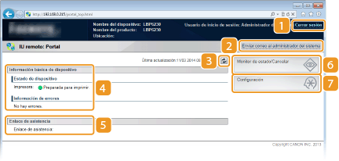
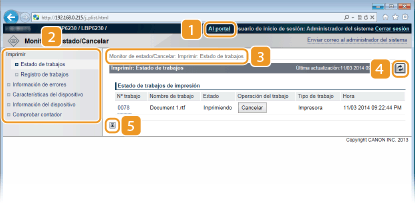
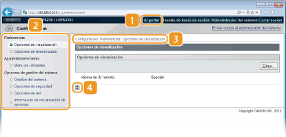

0KXF-037
Esta sección describe las pantallas principales del IU remoto.

 [Cerrar sesión]
[Cerrar sesión]Finaliza la sesión desde el IU remoto y vuelve a la página de inicio de sesión.
 [Enviar correo al administrador del sistema]
[Enviar correo al administrador del sistema]Muestra una ventana para crear un e-mail para el administrador del sistema. Su información de contacto consta en [Información del administrador del sistema] en [Gestión del sistema].
 Icono de actualización
Icono de actualizaciónActualiza la página actual.
 Información básica de dispositivo
Información básica de dispositivoMuestra el estado actual del equipo y la información de error. Si se ha producido un error, aparecerá un vínculo a la página Información de error.
 Enlace de asistencia
Enlace de asistenciaMuestra un enlace a la información de asistencia como se especifica en [Información del dispositivo] en [Gestión del sistema].
 [Monitor de estado/Cancelar]
[Monitor de estado/Cancelar]Muestra la página [Monitor de estado/Cancelar]. Puede utilizar esta página para consultar el estado de impresión actual, para cancelar el proceso de impresión y para ver un historial de los trabajos de impresión.
 [Configuración]
[Configuración]Muestra la página [Configuración]. Si inicia una sesión en modo de administrador de sistema, puede utilizar esta página para cambiar la configuración del equipo. Cambios en la configuración del equipo

[Al portal]Vuelve a la página del portal (página principal).
MenúHaga clic en un elemento para ver el contenido de la página en la parte derecha. Gestión de documentos y comprobación del estado del equipo
Rastro de la ruta de exploraciónIndica la serie de páginas que ha abierto para visualizar la página actual. Esto le ayudará a comprobar qué página está visualizando actualmente.
Icono de actualizaciónActualiza la página actual.
Icono de la parte superiorVuelve a la parte superior de la página cuando ésta ha quedado oculta.

[Al portal]Vuelve a la página del portal (página principal).
MenúHaga clic en un elemento para ver el contenido de la página en la parte derecha. Cambios en la configuración del equipo
Rastro de la ruta de exploraciónIndica la serie de páginas que ha abierto para visualizar la página actual. Esto le ayudará a comprobar qué página está visualizando actualmente.
Icono de la parte superiorVuelve a la parte superior de la página cuando ésta ha quedado oculta.
|
|
|
Acerca de [Opciones de gestión del sistema]
Solo podrá cambiar las opciones cuando inicie sesión en el modo Administrador del Sistema.
Cuando haya iniciado sesión en el modo Usuario Final, solo aparecerá [Gestión del sistema].
|